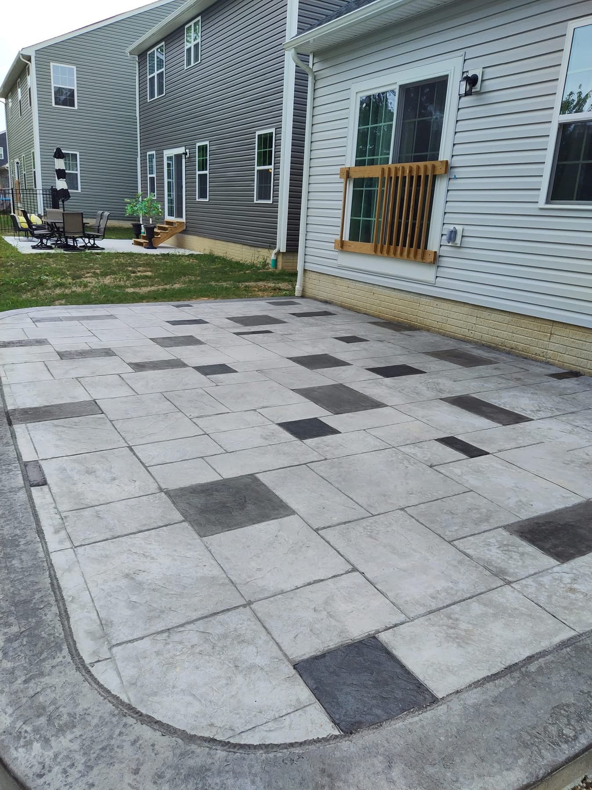
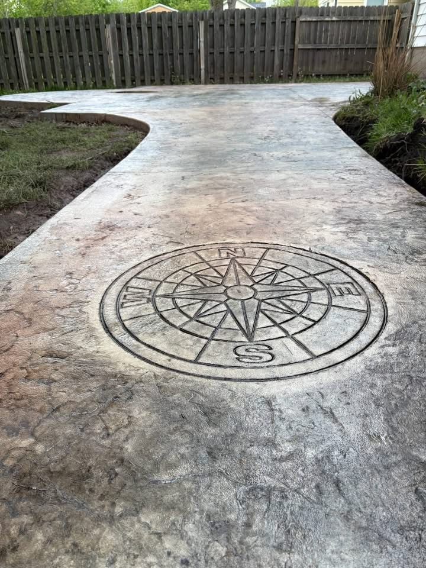
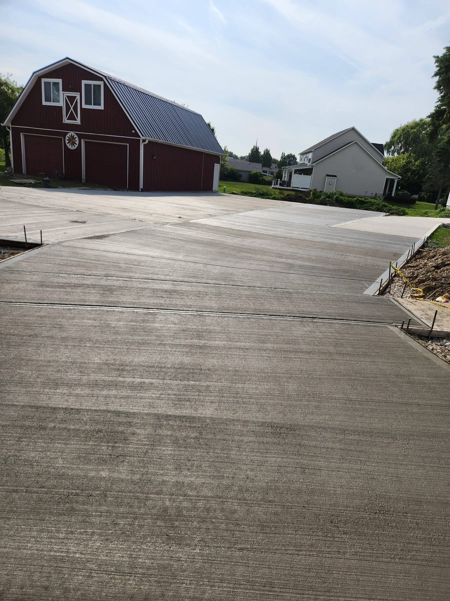
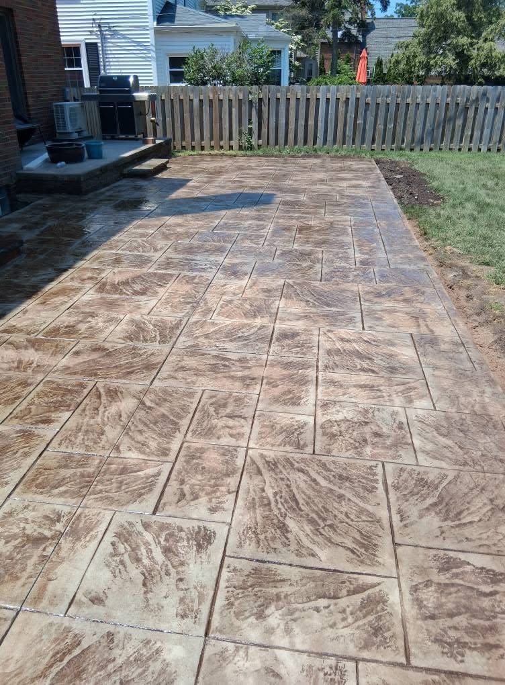

LORAIN COUNTY, OHIO
& SURROUNDING AREAS
& SURROUNDING AREAS
BLACK RIVER CONCRETE
GROUNDWORK.
WITH CHARACTER.
Driveways. Patios. Details that make it yours.Explore the work
CONCRETE, CONSIDERED.A place to gather.
A place to gather.
A better way home.
A finish of your own.
From everyday driveways to decorative patios, start with the way you want to use your space.


THE DETAIL
IS THE DIFFERENCE.
IS THE DIFFERENCE.

WHAT WE DO
LET’S TALK CONCRETE.